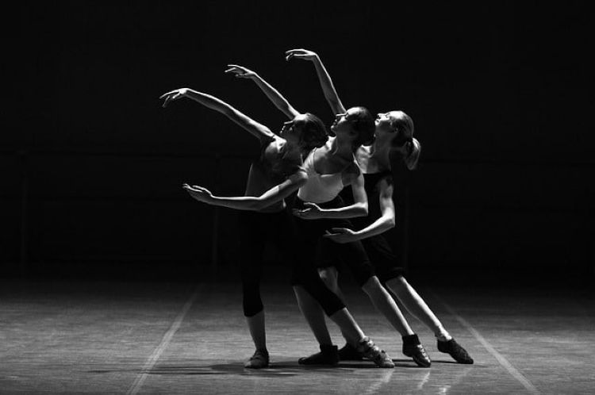
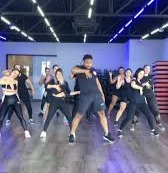
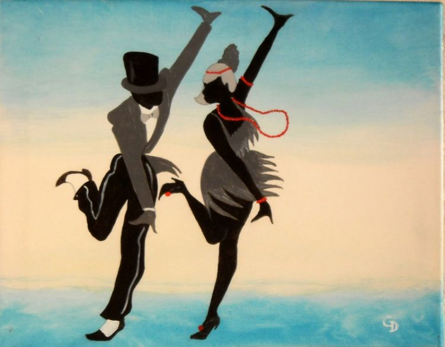
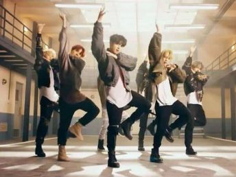

Styles de dance |
Visuels |
Descriptions |
Modern Jazz |
 |
Créé par Matt Mattox entre les années 1950 et 1970 en Amérique, le modern jazz a vu le jour en France en 1972. Le modern jazz est le mélange de plusieurs danses comme le classique, le jazz et le contemporain. Bien que les pas de bases reposent sur des positions de danse classique, le modern jazz laisse beaucoup de libertés aux danseurs, tout en mélangeant souplesse, rigueur et énergie. |
Power Dance |
 |
Rencontre entre danse et fitness, le Power Dance se danse sur n’importe quel type de musique énergique et entraînante, tout en alternant des mouvements de fitness et des pas de danse. |
Charleston |
 |
Le charleston se danse seul, à deux ou en groupe. Inventé en 1900 en Caroline du Sud, le charleston se danse sur des rythmes de hot jazz caractérisé par un tempo de 50 à 75 battements par minute. Les mouvements de bases sont fondés sur des déplacements du poids du corps, d’un jambe à l’autre, pieds tournés vers l’intérieur et genoux légèrement fléchis. |
Kpop |
 |
Apparue dans les années 1990 et originaire de la Corée du Sud, la Kpop est de la pop coréenne mêlant plusieurs genres musicaux comme la Pop, l’électro, le RnB, Hip Hop, Rock… Il est également caractérisé par un contenu audiovisuel de grande qualité. |